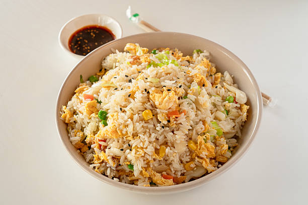
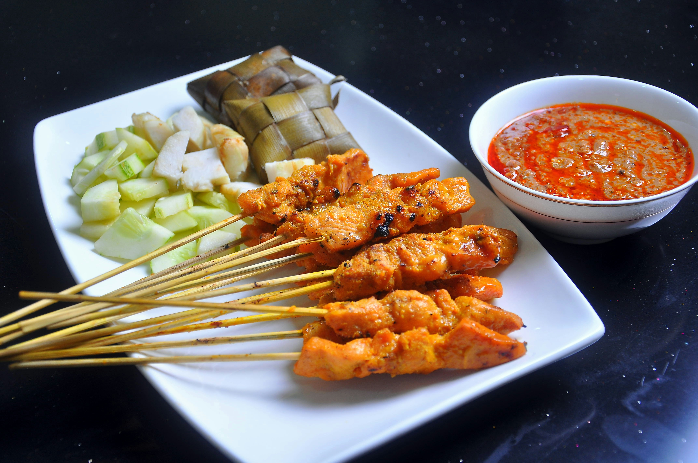
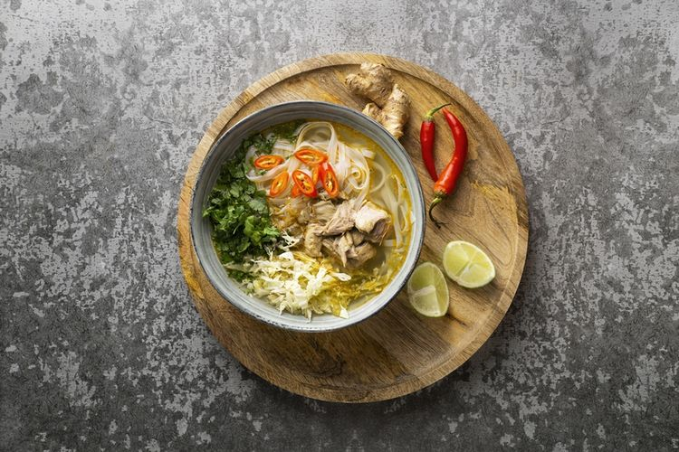
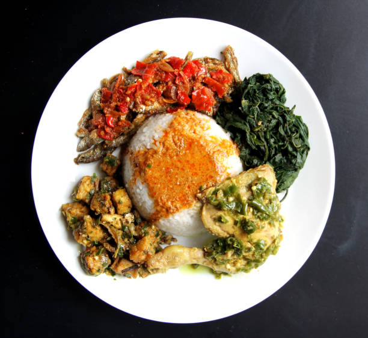
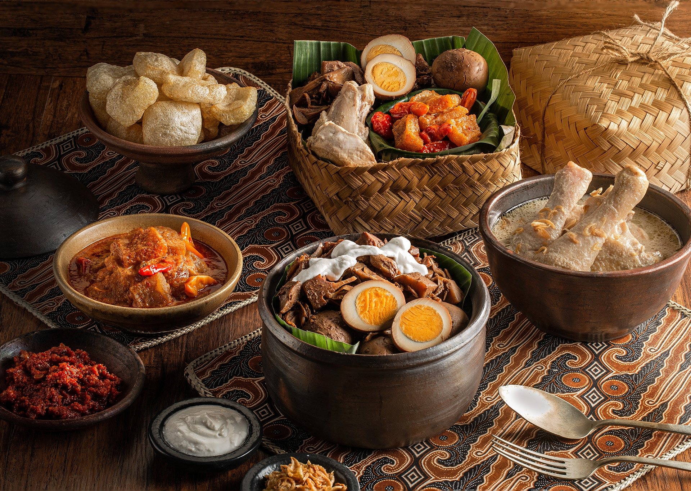
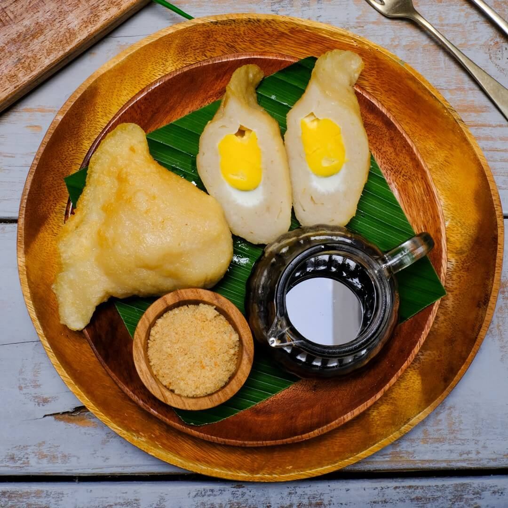

Hidangan Populer

Rendang
Rendang adalah masakan tradisional berbahan dasar daging (umumnya sapi) yang berasal dari Minangkabau, Sumatera Barat, dan diakui secara internasional sebagai salah satu makanan terlezat.
Lihat Resep
Nasi Goreng
Nasi goreng adalah hidangan ikonik Indonesia berupa nasi yang digoreng bersama bumbu khas seperti bawang merah, bawang putih, kecap manis, dan sambal yang sangat lezat dan menggugah selera.
Lihat Resep
Sate
Sate adalah hidangan khas Indonesia berupa potongan daging (ayam, kambing, sapi, dll) yang ditusuk pada lidi/bambu, kemudian dipanggang di atas bara arang dengan aroma khas menggoda selera.
Lihat Resep
Soto
Soto adalah makanan khas Indonesia berupa sup berkuah kaldu gurih (ayam, sapi, atau kambing) yang kaya rempah-rempah, dihidangkan dengan isian daging, soun, dan tauge.
Lihat ResepBakso
Bakso adalah kuliner khas Indonesia berupa bola daging (sapi, ayam, ikan, atau udang) yang dihaluskan, dicampur tepung tapioka/kanji, dan bumbu, lalu direbus hingga mengapung.
Lihat Resep
Nasi Padang
Nasi padang adalah hidangan khas Minangkabau, Sumatera Barat, berupa nasi putih yang disajikan dengan aneka ragam lauk-pauk kaya bumbu, rempah, dan santan yang sangat menggugah.
Lihat Resep
Gudeg
Gudeg adalah makanan khas Yogyakarta dan Jawa Tengah yang terbuat dari nangka muda (gori) atau rebung yang dimasak perlahan dengan santan, gula jawa, dan rempah-rempah.
Lihat Resep
Gado-gado
Gado-gado adalah makanan tradisional Indonesia khas Betawi, sering disebut "Salad Indonesia", yang terdiri dari campuran sayuran rebus, tahu, tempe, kentang, dan telur, disiram saus kacang tanah.
Lihat Resep
Pempek
Pempek adalah makanan khas Palembang, Sumatera Selatan, yang terbuat dari campuran daging ikan giling (biasanya tenggiri, gabus, atau belida) dan tepung sagu/tapioka yang kenyal lezat.
Lihat Resep